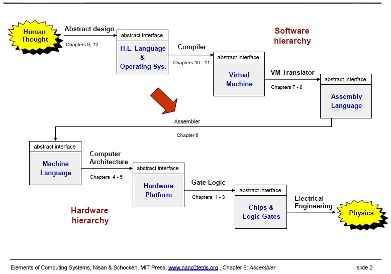

Nand2Tetris Part II 自學記
在網路發達的今天，只要有自學的能力，就算沒有上學，也可以學得比其他人更好。
本期的『少年科技人雜誌』將紀錄筆者自學 Nand2Tetris Part II 的過程，並介紹相關的基礎知識給大家參考！
編輯取材的內容除了維基百科之外，還有 nand2tetris 的官網 http://nand2tetris.org/ 中的文件，以及 已經修完這門課的 Havivha 同學提供的 github 專案 ，這應該足以讓我們自學完成這門課了。
讓我們回顧一下， nand2tetris 課程的整體結構，大致上如以下投影片所示：

圖片來源：節錄自 http://nand2tetris.org/lectures/PDF/lecture%2007%20virtual%20machine%20I.pdf
而在 Part I 的習題當中，我們實作了從 nand 到 HackComputer 的所有硬體元件，而且還時做了一個組譯器，這些作業如下圖所示。

圖片來源：節錄自http://nand2tetris.org/lectures/PDF/lecture%2005%20computer%20architecture.pdf
在 Part II 的習題中，我們將從『虛擬機』開始，接著實作出『編譯器』與『作業系統』，以便與 PartI 最後的『組譯器』 一起形成 HackComputer 的軟體部份。
在學習的過程中，我們會用到 http://nand2tetris.org/software.php 當中所提供的 CPU Emulator, VM Emulator, Assembler, Compiler, Operating System ，請先下載並安裝好這些軟體。
現在、就讓我們一起出發，完成這趟自學旅程吧！
編輯： 陳鍾誠 email: ccckmit@gmail.com